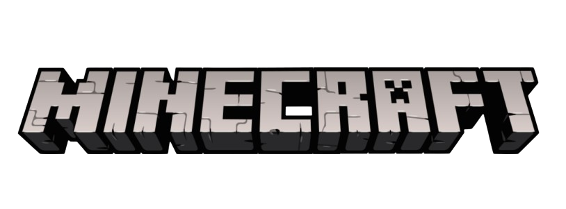
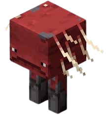
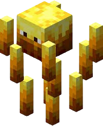

暴風之影


第一支在岩漿行走的生物
在試用版本 20w13a
玩家可使用鞍騎乘成年熾足獸，並且可使用拴繩牽引。類似用胡蘿蔔釣竿控制豬的前進方向一樣
熾足獸在熔岩上的常規行進速度為4.14米/秒，在陸地上的常規行進速度為1.74米/秒
生成在成年熾足獸頭上的幼年熾足獸仍會成長為成年熾足獸，但它們長大後不會掉下來。對成年熾足獸頭上的熾足獸使用拴繩可強制將其拉下來。

烈焰使者會搜尋48格內的玩家，遠超大多數生物的16格搜尋範圍。
烈焰使者會發動遠程攻擊。它們也會對2格內的攻擊目標進行近戰攻擊，但不會點燃目標。
在所有難易度中均會造成5（♥♥♥）的投射物傷害，並使實體著火5秒，通常受到額外的4（♥♥）火焰傷害。
Java 1.0.0 Beta 1.9-pre1 加入了烈焰使者。
0.9秒中發射3個小火球，然後火焰熄滅並等待5秒後繼續攻擊。